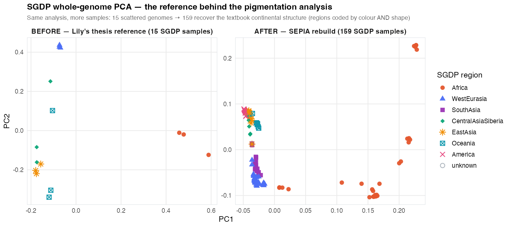
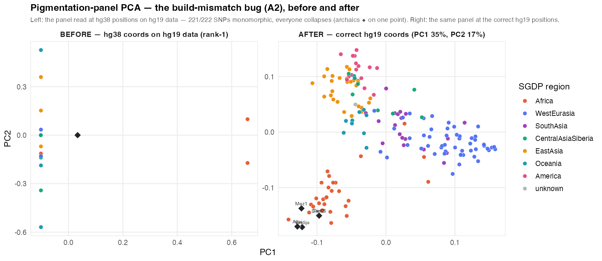
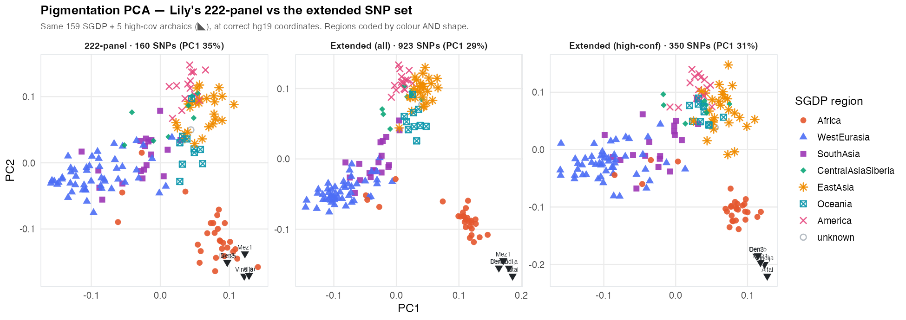

Project plan & roadmap · 24 Jul 2026
SEPIA — what's next
Pigmentation genetics in Neanderthals & Denisovans, as one phased plan: make the foundation trustworthy, verify each step, then do the science and the two papers.
This is now the single plan — the bug fixes, the analysis redesign, the infrastructure, the writing, and the reviewer-driven QC checks (items Q1–Q10) all live here, grouped into phases you do top-to-bottom. Every item stands on its own; unfamiliar term? See the Glossary.
New: the Data & Pipeline living record
What the raw data actually is, the difference between reads (BAM) and genotype calls (VCF), what each pipeline step transforms, and a run log we update as we execute — on its own page: Data & pipeline →. The clean-slate rebuild plan (start again from the raw public BAMs, given the QC issues) is rebuild_from_raw; the justified genome subset is SAMPLE_INCLUSION. Everything is now also available as HTML — see All docs →.
What this project is
The recurring public question is "what did Neanderthals and Denisovans look like?" SEPIA asks whether their pigmentation (skin/hair/eye color) can actually be read off their ancient DNA. The honest answer so far is not confidently — the ancient DNA is patchy and shallow, and pigmentation genes don't track ancestry the way the rest of the genome does. So the contribution is an honest map of what the pigmentation genetics does and doesn't support, with the uncertainty kept front and center.
Glossary
Read once; the rest of the plan assumes nothing beyond this.
Show the 29 terms — collapsed so it stays out of your way; expand when you hit an unfamiliar term
- Genome build (hg19 vs hg38)
- The "reference genome" is the standard map of human DNA that everyone's sequence is compared against. It's been re-released over the years; hg19 (GRCh37, 2009) and hg38 (GRCh38, 2013) are the two that matter here. The same SNP has a different coordinate number in each build. Example: the SLC24A5 skin-color SNP is at
15:48,134,287in hg38 but15:48,426,484in hg19 — ~292 kb apart. A coordinate from one build, looked up in the other, points at the wrong place. - SNP
- A single genome position where people differ by one DNA letter (A vs G, etc.). "Pigmentation SNPs" are positions known to affect skin/hair/eye color.
- The panel
- The fixed list of 222 pigmentation SNP positions this project focuses on. Its coordinates came from the GWAS Catalog and are on hg38.
- The sequence data ("the data")
- The actual DNA reads for each individual — both the archaic samples (Neanderthal/Denisovan) and the modern SGDP genomes. All aligned to the hg19 reference (
hs37d5.fa). - Archaic samples / SGDP
- Archaic = the ancient Neanderthal & Denisovan individuals (14 analyzed). SGDP = Simons Genome Diversity Project, the modern human comparison genomes (15 here).
- Coverage / depth & missingness
- Depth = how many times a position was sequenced (higher = more reliable; ancient DNA is often very low). Missingness = positions with no reliable genotype.
- PCA & projection
- PCA squashes genome-wide variation into a few axes (PC1, PC2…) so samples can be plotted; similar genomes cluster. Projection = build the plot from the modern samples, then drop the (gappy) archaic samples onto it so their gaps don't distort the axes.
- Monomorphic
- A position where everyone in the sample has the same letter — no variation, so it tells PCA nothing.
- Ploidy (diploid/haploid)
- Humans are diploid — two copies of each non-sex chromosome — so a genotype is a pair (
A/G). "Haploid" calling (--ploidy 1) records only one allele, so a heterozygote can't be represented. - Allele
- One of the alternative DNA letters at a SNP (at an A/G SNP,
AandGare the two alleles). Being diploid, a person carries two —A/A,A/G(a "heterozygote"), orG/G. - GWAS / GWAS Catalog
- A GWAS (Genome-Wide Association Study) scans many people's genomes to find SNPs associated with a trait. The GWAS Catalog (NHGRI-EBI) is a public database of those hits; it reports coordinates on hg38. Our 222-SNP panel came from it.
- Effect size / direction
- From a GWAS, how strongly a SNP's allele shifts a trait. "Direction" = just the sign: does the allele increase or decrease pigmentation.
- kb (kilobase)
- 1,000 DNA letters. "~292 kb apart" ≈ 292,000 letters apart.
- Aligned / BAM
- "Aligning" = matching a sample's short sequencing reads to where they belong on the reference genome. The result is a BAM file (Binary Alignment Map) — the standard file of one sample's aligned reads.
- Genotype calling / VCF
- Working out each individual's alleles at each position from their aligned reads (tools like
samtools/bcftools). Output is a VCF file. - SLURM / .slurm script
- The cluster's job scheduler; a
.slurmfile is a batch-job script you submit to run something on the cluster. - liftOver / CrossMap
- Standard tools that convert genome coordinates between builds (e.g. hg38→hg19) using a "chain file" — how you'd fix a build mismatch.
- MC1R
- The melanocortin-1-receptor gene; disabling ("loss-of-function") variants cause red hair and pale skin. A frequently-asked target for archaic humans.
- HIrisPlex-S
- A published forensic system that predicts skin/hair/eye color from a fixed set of DNA markers. We use its marker list.
- Exome
- The protein-coding portion of the genome (~1–2%). "Exome data" = sequencing focused there.
- Synonymous vs non-synonymous
- A DNA change inside a gene is synonymous (silent — protein unchanged) or non-synonymous (changes the protein). Their ratio hints at whether variation is functional / under selection.
- Tissue-specific expression
- A gene is "expressed" where it's switched on. "Skin-specific" pigmentation genes are switched on mainly in skin (vs. active all over the body).
- The six skin-specific genes
- Referenced in B7: TYR (tyrosinase — key melanin enzyme), OCA2, TYRP1, DCT, PMEL, MLANA — all melanocyte/melanin-pathway genes.
- Checksum / manifest
- A checksum (e.g. an
sha256hash) is a short fingerprint of a file's bytes; change one byte and it changes — so it proves a file is intact and is the exact copy you think it is. A manifest lists every input with its checksum, source, and build — the "these are the exact ingredients" ledger. (Building it is item Q1.) - Tracer SNP
- A SNP whose coordinate is known in both builds (e.g. SLC24A5 =
15:48,426,484hg19 /15:48,134,287hg38). Look up where a file puts it and you instantly know that file's build — a cheap, decisive build check (item Q2). (The panel actually stored48,134,288— one base high; see B2/the changelog for that off-by-one.) - Positive control
- A test where you already know the right answer, run first to prove the machinery works before trusting it on a new question. Here: does the whole-genome PCA reproduce the textbook result (Africans separate from non-Africans on PC1)? If it can't reproduce the known, don't believe the novel result (item Q3).
- Palindromic SNP
- A SNP whose two alleles are DNA complements — A/T or C/G. Because you can't tell from the letters alone which DNA strand a dataset reported, merging two datasets can silently flip the allele and invert a score. They're flagged and usually dropped (item Q4).
- Contamination (aDNA)
- Modern human DNA (from excavators, lab staff, environment) mixed into an ancient sample. It looks like extra "normal" DNA, inflating heterozygosity and creating false variant calls — so its fraction must be estimated and kept low (item Q7).
- Pipeline DAG
- A "directed acyclic graph" describing the pipeline as which step feeds which — the recipe written so a tool (Snakemake / Nextflow / Make) runs it in the right order automatically. It removes any "which script is canonical" ambiguity and auto-generates the flow diagram (item Q10).
Where things stand
Three places hold the work, all now reviewed. The big shift for the next phase: the pigmentation datasets we want already exist (on hg38) in one public repo, so the work moves from assembling data to fixing a few pipeline bugs, verifying the foundation, and integrating that data.
✓ Key results so far — live step-by-step workbooks
The pigmentation build-mismatch bug (A2) is fixed — reading the panel at correct hg19 coordinates restores real structure (Fig 2); the SGDP reference is rebuilt 15→159 (Fig 0); the SNP surface is extended to 1,155 pigmentation SNPs (SNP set →).
Archaic projection & the gene-vs-SNP result: building the PCA on the 159 moderns and projecting the archaics, across three spaces — whole genome, pigmentation SNPs, pigmentation genes. The whole-genome and pigmentation-gene-region results are near-identical (archaics sit as a divergent outgroup); only the ascertained pigmentation-SNP panel places archaics with Africans. So genes = ancestry, ascertained SNPs = selection — the "archaics with Africans" is a selection/ascertainment footprint, not gene ancestry. Full logic: Projection workbook →.
Repo
lasisilab/sepia — the analysis website (built with the R tool workflowr), small data files, and scripts.
Thesis
Lily's 41-page honors thesis (20 Apr 2026) — the completed first version of the work.
Cluster
110 GB on UMich "Great Lakes" — the full ~19-job compute pipeline and all the large genomic files. Full inventory + step-by-step audit: plan/cluster_inventory.md and plan/pipeline_workbook.md in the repo.
Datasets — already assembled, on hg38, in a public repo
The four pigmentation datasets for the next phase — plus the forensic prediction panel — already exist in the public repo tinalasisi/pigmentation-gene-network, all on the hg38 build. Each links to its file; full provenance in DATA_SOURCES.md. (We use this repo, not the older melanogenesis-constraints.) Establishing the project's own input provenance — the genomes, the panel BED, the gene coordinates — is item Q1.
| Dataset (→ source file) | Where it came from | What it is | Level |
|---|---|---|---|
| Melanogenesis network ("Raghunath") | Raghunath et al. 2015, BMC Res Notes — cleaned/curated in-lab as earlier SEPIA work | A 265-gene / 429-link map of how melanin-making genes regulate each other — the mechanistic backbone everything else attaches to | genes |
| GWAS Catalog | NHGRI-EBI (Sollis 2023), pulled via API | 1,072 pigmentation-associated lead SNPs from association studies | SNPs |
| CRISPR screen | Bajpai et al. 2023, Science | 169 genes whose disruption changed pigmentation in a genome-wide lab screen | genes |
| Cross-species | Baxter et al. 2018/19, PCMR | 635 curated pigmentation genes with mouse/zebrafish counterparts | genes |
| PPI expansion | D'Arcy et al. 2023, Bioengineering | 243-gene disease-gene table + a protein–protein interaction network | genes |
| HIrisPlex-S (prediction panel) | Chaitanya 2018 / Walsh 2017 | The forensic skin/hair/eye-color prediction markers: 36 markers → 16 genes, incl. the full MC1R red-hair set + blue-eye HERC2/OCA2. (extraction notebook) | SNPs |
For Lily — what we've ascertained
Lily, this part is for you. Here are the three things the re-analysis pinned down about the pipeline, in plain terms, and what each one means going forward. None of it diminishes the thesis — the headline verdict (archaic pigmentation prediction is not yet well-supported) was the right, honest call, and the coverage/missingness work stands. These are fixable data-plumbing issues that an automated build-and-provenance check — which nobody had in place — would have caught early. Writing them down here is how the next person avoids repeating them.
① The genome-build mismatch — confirmed, and it's the big one (bug A2)
What we found: the 222-SNP panel is written in hg38 coordinates, but every genome (archaic and SGDP) is aligned to hg19. Looking up an hg38 position in hg19 data lands ~hundreds of kb off the intended SNP, so 221 of 222 panel sites came back monomorphic. With nothing to separate samples on, the pigmentation PCA collapsed to a single axis and every archaic projected onto one identical point (Fig 8). So "PC1 differentiates Bantu and Yoruba" and "archaics fall near Africans" were artifacts of one accidental SNP — not pigmentation biology.
The lesson & the fix: a genotype doesn't care about the build — the same SNP just has a different coordinate number in hg19 vs hg38. So the cheapest correct fix is to read the panel at its correct hg19 coordinates straight out of the hg19 data — no re-alignment, no liftOver. We built a verified rsID↔hg19↔hg38 map for all 222 SNPs (which also caught a separate +1 off-by-one in the panel's hg38 coordinates), and re-ran your pigmentation PCA at the right positions. It works: the same panel recovers real structure, and the archaics fall together near the African end — see the before/after (Fig 2).
② Denisova 3 looked empty because of chromosome names (bug A1)
What we found: Denisova 3's alignment labels chromosomes chr1, chr2… while the reference, the panel, and every other sample use 1, 2…. Its reads never matched the panel positions, so a ~30× high-coverage genome showed up at 0.5× / 69-of-222 SNPs — down among the low-coverage samples in Fig 5, contradicting its own high-coverage classification in Table 3.
The lesson & the fix: contig naming (chr1 vs 1) has to be harmonized before anything is matched by position — that's now an automated lint (Q2). The fix itself is a one-line samtools reheader then re-run; the coverage should jump up next to Vindija 33.19.
③ Whole-genome calling was haploid (bug A3)
What we found: the whole-genome calling used --ploidy 1 across all chromosomes, so heterozygotes on the autosomes couldn't be recorded — and those haploid archaics were then scored against a diploid modern PCA basis. The good news: the whole-genome PCA conclusion still holds (archaics sit clearly on the non-African side of PC1), so this didn't overturn a result — but it's a real inconsistency, fixed by calling diploid on the autosomes.
And one upgrade — not a bug: the SGDP reference went from 15 → 159
Your whole-genome PCA (Fig 7) was fine — it just rested on 15 SGDP genomes, which can only sketch global structure. SEPIA finished the merge you'd started (166 → 159 usable) and the PCA now recovers the full textbook continental layout. The before/after is the first figure in the figures — and it's the reference the corrected pigmentation analysis is built on.
Roadmap — phased execution order
The work is grouped into seven phases, done top-to-bottom. Each phase is a gate — don't trust anything built on it until its checks pass — and pairs each fix/build with the QC check that proves it worked. Phases 0–3 make the foundation trustworthy; Phase 4 is the science; Phases 5–6 are reproducibility and writing (partly parallel).
The single most unblocking step: B2
Establishing hg38 as the reporting build (B2) via a verified rsID↔hg19↔hg38 locus map — bridging the hg19-native genotypes — is the fix for the root bug (A2) and the bridge that lets the four hg38 gene-network datasets (B1) integrate. A1 (Denisova 3 renaming) is independent and can run in parallel.
QC already in place vs. what these phases add
The QC phases below (0–3, the Q items) don't start from zero — they build on the quality work already in Lily's thesis. Knowing the split lets us credit what's done and target only the gaps.
✓ Already in place (Lily's thesis pipeline)
The coverage/depth + missingness arm — the QC-minded half of the thesis: per-sample per-base depth across the whole panel (samtools depth -a, zero-coverage sites included), a missingness model (glmer(Missing ~ chromosome + age + (1|Coverage) + (1|Sample))), and genotype-confidence simulations, including a Monte-Carlo term that decays confidence toward the read ends — an implicit nod to ancient-DNA damage.
Standard pipeline hygiene: samtools quickcheck on downloads; MAPQ ≥ 30 / BaseQ ≥ 30 in the whole-genome calling; biallelic-SNP filtering + LD-pruning before the WG PCA; dedup + deterministic variant IDs + reference-frequency scoring in the projection; and labelling Denisova 11 as an F1 hybrid in the figures.
The honest framing itself — the headline conclusion (archaic pigmentation prediction is not yet well-supported) was a QC-minded verdict, not over-claiming.
◱ Not yet done — exactly what Q1–Q10 add
Build/contig-naming lint (Q2), a provenance manifest + checksums (Q1), a positive control (Q3), allele/ref-alt/palindrome harmonization (Q4), PCA/projection non-degeneracy checks (Q5), coverage-vs-expectation alerting (Q6), sample identity/sex/contamination (Q7), formal aDNA-damage assessment (Q8), cross-validation vs published genotypes (Q9), and reproducibility infrastructure (Q10).
Their absence is precisely why the three serious bugs slipped through — the build mismatch (A2), Denisova 3's naming (A1), and the projection collapse were never caught by an automated check. Quality filtering was also inconsistent: the -q 30 -Q 30 filter is in the whole-genome calling but not in the depth step or the pigmentation-panel calling.
| Phase | Goal (the gate) | Items | Status |
|---|---|---|---|
| 0 · Provenance & environment | Nothing trusted until every input is traced to a source, build & checksum | Q1, Q10a | in progress |
| 1 · One genome build, verified | Panel + all data on one build, proven — and called genotypes correct | A2, B2, A1, A3, Q2, Q4, A4, A5 | todo |
| 2 · Positive controls & PCA correctness | Reproduce a known result before building novel ones | Q3, Q5, Q6 | in progress · Sanity 1 ✓ |
| 3 · aDNA sample QC | Samples authentic, correctly labelled & damage-aware | Q7, Q8 | todo |
| 4 · Analysis redesign (the science) | Deliver the analyses agreed on 17 June | B1, B3, B4, B5, B6, B7, Q9 | todo |
| 5 · Infrastructure & reproducibility | A re-runnable, unambiguous pipeline; repo tidy | C2, C3, C4, Q10, A6, C1 ✓ | in progress |
| 6 · Writing | Two manuscripts out | D1, D2, D3 | todo |
Before / after — the errors in pictures
Fig 0 (SGDP reference rebuild) and Fig 2 (the pigmentation-panel bug fixed) both show real before/after pairs — those runs are done. Fig 1 (Denisova 3 coverage) and Fig 3 (scree) are rendered from the committed, pre-fix outputs by plan/figures/make_consequence_figures.R — an honest snapshot of the buggy state, not a mock-up; their "after" fills in once A1 (the Denisova 3 reheader) is re-run. This before/after record is the point: it lets us show that fixing the build changed the result, rather than asserting it. The full per-bug trace behind every panel is in the evidence log, plan/verify/BUG_EVIDENCE.md. Colours: teal = declared high-coverage, red = Denisovan, gold = the Denisova 11 hybrid.
SGDP reference PCA — Lily's 15 genomes vs the SEPIA 159-genome rebuild (Sanity 1)
What it shows: the whole-genome SGDP PCA the entire pigmentation comparison is built on. This one is not a bug — both PCAs are healthy (the whole-genome panel was never hit by the build mismatch). The point is the reference: 15 scattered genomes (left, the thesis) can only hint at global structure; the 159-genome SEPIA rebuild (right) recovers the textbook continental layout — PC1 separating African from non-African, the non-African clines resolved. This is the positive control (Q3 / Sanity 1): if the known result comes back, the machinery is trustworthy for the novel one.

Panel coverage — the Denisova 3 fingerprint (A1)
What it shows: mean sequencing depth over the 222-SNP panel for each archaic sample. Denisova 3 — a ~30× genome the thesis lists as high-coverage (teal) — sits at the very bottom at 0.5×, 69/222, among the genuinely low-coverage samples, because its chr-named reads don't match the bare-named panel. After the fix (rename + re-run) it should jump up next to Vindija 33.19 and Chagyrskaya 8.

make_consequence_figures.R after once B2 + A1 landPigmentation-panel PCA — the bug, fixed (A2) realized
What it shows: the same 222-SNP pigmentation panel, read at the wrong (hg38) vs the correct (hg19) coordinates. Left (before): 221/222 SNPs are monomorphic, so the PCA is rank-1 — every modern collapses onto ~one line and all archaics (◆) pile onto a single point (Lily's Fig 8). Right (after): the identical panel at the right coordinates recovers real structure — moderns spread by region (PC1 ≈ 35%, PC2 ≈ 17%), and the five high-coverage archaics (◆) fall together near the African end of the pigmentation axis. This is B2a (159 SGDP + 5 high-cov archaics; Chagyrskaya pending its VCF re-fetch); the archaic projection in Lily's exact style follows once a newer plink2 lands.

PCA eigenvalue spectrum — rank-1 degeneracy (A2)
What it shows: the eigenvalues (scree) of each PCA. The pigmentation panel is rank-1 — only PC1 > 0, PC2–10 ≈ 3×10⁻¹⁸ (one lonely bar) — because 221 of 222 SNPs are monomorphic at the mismatched coordinates and carry no loadings. The whole-genome spectrum declines healthily across all 10 PCs. After the fix the pigmentation panel should show several real components.

The wider pigmentation PCA — Lily's 222 vs the extended SNP set (B3) realized
What it shows: the same 159 SGDP + 5 high-cov archaics, at correct hg19 coordinates, over three SNP sets — Lily's 222-panel, the extended set (all ~923 SNPs), and high-confidence only (~350) — the gene-network integration ([SNP set], B1/B3). All three recover the same continental structure; the extended and high-confidence sets sharpen the non-African clines, and the archaics (▽) fall together near the African end throughout. Regions are coded by colour and shape so they stay distinct. The 642 low-confidence single-GWAS SNPs move the picture only modestly — reassuring — which is exactly why we tagged them.

Provenance & environment
Gate: every file the pipeline touches has a known source, a known genome build, and a checksum; tool versions are captured. Until this passes, every later result is "guilty until proven innocent." Most confirmed bugs so far are provenance/harmonization failures — so this comes first.
Data-provenance manifest + checksums
todo🔴 TL/LHWhat it is: a single table, qc/manifest.tsv, with one row per pipeline input — every genome/BAM, every SNP panel, every gene-coordinate set, the metadata — recording path · sha256 · source · genome_build · N · date_obtained · produced_by. A specific unknown to resolve: the pigmentation panel is currently read from a personal home dir (/home/lheald/gwas_loci/snps.bed) with no documentation — locate it, characterize it (which SNPs, which build), and give it a real provenance row.
Why it matters: you can't verify an analysis whose inputs you can't name. A wrong/undocumented source, a wrong build, a truncated download, or a silently-substituted file corrupts everything downstream invisibly. This is the prerequisite for every other check.
- Enumerate every input the ~19-job pipeline reads (cross-check
pipeline_workbook.md). - Compute
sha256; record source + build + N + date. - Locate & characterize
/home/lheald/gwas_loci/snps.bed. - Record how
data/snps.txtwas generated (GWAS Catalog trait EFO + access date). - Record gene-coordinate source (Ensembl/RefSeq release # + build); assert every gene → one region.
Q10a — do the first slice of Q10 now
Alongside Q1, pin and record tool versions (bcftools, plink2, samtools, R + packages) into the manifest so Phase 1's results are reproducible from the start. The full reproducibility build (DAG + CI) is tracked as Q10 in Phase 5.
One genome build, verified
Gate: the panel, the gene coordinates, and the genotypes resolve to one reporting build (hg38) via a verified rsID↔hg19↔hg38 map — genotypes read from the hg19 data and expressed on hg38 — proven by an automated lint; the called genotypes are correct (diploid where they should be); and the dead/competing scripts are gone. This phase is the critical path — nothing pigmentation-SNP-related is trustworthy until it passes. Every bug here was reproduced with commands + real output — full log plan/verify/BUG_EVIDENCE.md.
The SNP list and the data are on different genome builds — the root problem
confirmed🔴 TL/LHWhat it is: the 222 pigmentation SNP positions ("the panel") were taken from the GWAS Catalog, which uses the hg38 genome build. But every individual's DNA — the archaic samples and the SGDP genomes — is aligned to the hg19 build. Since the same SNP sits at different coordinates in the two builds (the panel lists SLC24A5 at 15:48,134,288, an hg38-style coordinate, vs 15:48,426,484 in hg19), looking up the panel's hg38 positions in the hg19 data hits the wrong places in the genome.
Why it matters: it breaks both analyses. (1) The wrong hg19 positions are essentially random spots, and at random spots all 15 modern genomes carry the same letter (221 of 222 are monomorphic — no variation). Positions with no variation give the PCA nothing to separate samples on, so it collapses to one axis and every archaic sample lands on the same point — the figure is meaningless. (2) The depth/missingness reported "at each pigmentation SNP" is measured at a spot that can be far off — hundreds of kb (~292 kb for SLC24A5), differing per SNP — so it isn't the intended loci.
What to do: put the panel and the data on the same build first (item B2). Plan's choice: report on hg38 via a verified rsID↔hg19↔hg38 map — for each SNP re-pull both builds' coordinates + ref/alt by rsID (keeping both), read the genotype from the hg19 data at the hg19 coordinate, and express it on hg38. A genotype is build-independent, so this is lossless relabeling, not re-alignment. Until the map is in place, treat the pigmentation PCA and pigmentation-depth results as unreliable. Proven fixed by Q2 + Q5.
Consequence (demonstrated): the pigmentation PCA is rank-1 (pigmentation.pca.eigenval: PC1 = 0.063, PC2–10 ≈ 3e-18); only 1 of 222 SNPs (a non-canonical rs76285708) carries any loading; modern PC1 takes just 3 discrete values — so the thesis's "PC1 differentiates Bantu and Yoruba" (Fig 8) and "archaics fall near Africans / a small number of loci" (Discussion, p.32) are one-SNP artifacts. The whole-genome PCA (Fig 7) and the aggregate missingness result are not affected.
A2 Evidence
$ grep -E "48134288|48426484" data/snps.txt 15:48134288:: # the panel's SLC24A5 position = hg38 (hg19 would be 48426484) $ ssh greatlakes head -1 reference/hs37d5.fa >1 dna:chromosome chromosome:GRCh37:1:... # the data's reference = hg19 $ awk 'NR>1{n++;if($5+0==0)z++}END{print n,z}' pigmentation_snps_freq.afreq sites=222 ALT_FREQ==0: 221 # 221/222 wrong-coordinate sites are monomorphic in SGDP $ cat pigmentation.pca.eigenval | $ cat sgdp.wg.pca.eigenval (same samples) 0.0627529 | 2.29579 2.9703e-18 (x 9) | 1.54548 1.40896 ... # rank-1 vs full-rank $ head -3 data/ancient.projected.pig.sscore Chagyrskaya8 ... 0.0335547,-4.0e-11,... # every archaic sample gets Denisova25 ... 0.0335547,-4.0e-11,... # the IDENTICAL coordinates $ grep '^15' data/vindija33_depth.txt | grep 48134288 15 48134288 19 # depth measured at the hg38 coord, ~292kb off the real SNP
The consequence, in pictures — now fixed by B2a (same 222 SNPs, wrong vs correct coordinates):
CONFIRMED → fixed. Panel hg38, data hg19 → wrong coordinates. Re-reading the panel at correct hg19 coords (B2a) restores real structure (eigenvalues 31/15/8… vs the old 0.06 then ~0).
One reporting build (hg38), bridged to the hg19 data — do this first
todo · critical path🔴 TL/LHWhat it is: the SNP panel (and the gene-network datasets) are on hg38; the archaic + SGDP genotypes are physically on hg19. The project reports and integrates on hg38 (the field standard + where the gene-network and GWAS Catalog live) — but we do not re-align the genotype data. Because the analysis is locus-focused, we build a verified rsID ↔ hg19 ↔ hg38 map (both coordinates + per-build ref/alt per SNP), read genotypes from the hg19 data at the hg19 coordinate, and express everything on hg38.
Why it matters: this is the fix for the root bug (A2) and the prerequisite for integrating the four hg38 gene-network datasets (B1) and every matched-build analysis (B3, B4, B7, Q9) on a common hg38 coordinate system. Nothing pigmentation-SNP-related is trustworthy until the map is verified.
What to do: build the rsID dual-coordinate locus map (panel + gene-network SNPs) with per-build ref/alt; extract genotypes from the hg19 data at each locus; report + re-run depth + PCA on hg38. Critical-path first step. A genotype is build-independent, so this relabels coordinates — it does not re-align reads. (The genome-wide sanity PCA stays hg19 as a control.) It isn't "done" until Q2 (tracer-SNP lint) and Q5 (PCA no longer collapses) both pass.
Data needed: none. The hg19 BAMs already sit on the cluster, the 222-SNP panel is committed, and the chain file / hg38 reference / raw reads are all public. The only dependency is re-establishing cluster access (Great Lakes SSH; Kerberos + Duo) — no dataset is missing.
Execution: B2a is the route (fast, lossless) — for each panel + gene-network SNP re-pull both the hg38 and hg19 coordinates + ref/alt by rsID (keep both builds), verify with Q2, extract genotypes from the hg19 data at the hg19 coordinates and rebuild the pigmentation PCA labelled on hg38, re-run the projection with no-mean-imputation, fix A1 in the same pass, then re-run make_consequence_figures.R after for the before/after figures. B2b (genome-wide genotypes physically on hg38) is optional and deferred — B2a already reports on hg38 at every locus, and re-aligning archaic reads is only for discovering novel genome-wide variants (not a project goal). Commands, SLURM, and compute/access needs are in the B2a runbook (plan/b2a_runbook.md).
Denisova 3 uses different chromosome names than everything else
confirmed🔴 LH→TLWhat it is: chromosomes can be labelled 1, 2, … (bare) or chr1, chr2, … (prefixed). The reference, the panel, and every archaic sample use the bare style — except Denisova 3, whose file uses chr-prefixed names. So the (bare) SNP positions aren't found in its (chr) file.
Why it matters: Denisova 3 is a high-coverage Denisovan, yet it shows near-empty coverage (mean depth 0.5×, 69/222 SNPs — vs 30.7× and 222/222 for Vindija 33.19, a comparable sample) and sits in the sparse group of thesis Fig 5. Because the reference and panels are bare-named, any step that pairs Denisova 3's chr-named reads with them (whole-genome calling, PCA inputs) fails to match and drops most of its data — so the sparseness is very likely a naming artifact. (Separate from A2: A2 makes the panel wrong for everyone; A1 makes this one sample look empty.)
What to do: relabel Denisova 3's chromosomes to the bare style — e.g. samtools reheader with a name map (chr1→1, …) — then re-run its depth + genotype calling and confirm the coverage is really there. (The cluster script pca_ancient.slurm already has chr-normalizing logic to reuse.) Proven by Q2 (naming lint) and Q6 (coverage jumps into the high band).
Consequence (demonstrated): in the committed depth files Denisova 3 recovers at 0.5×, 69/222 SNPs (vs Vindija 33.19 at 30.7×, 222/222), so Fig 5 draws this 30× genome in the sparse band — contradicting the thesis's own Table 3, which lists it as high-coverage. In the whole-genome projection its recovered dosage is 221k vs ~1.66M for its peers, placing it at the empty-sample point (PC1 = +0.011) instead of with the other Denisovan (Denisova 25, PC1 = −0.058) in Fig 7. No effect on Fig 8.
A1 Evidence
$ samtools view -H filtered_Denisova3.bam | grep '^@SQ' | head -2 @SQ SN:chrM ... @SQ SN:chr1 ... # chr-prefixed — the ONLY sample that is $ samtools view -H filtered_vindija33.bam | grep '^@SQ' | head -2 @SQ SN:1 ... @SQ SN:2 ... # bare (matches reference & panel) # panel-wide mean depth: Denisova3 = 0.5x (69/222) Vindija33 = 30.7x (222/222)
The consequence, in pictures — the corrected panel drops in after the reheader + re-run:
CONFIRMED. A contig-name mismatch on one sample. Independent of A2.
Whole-genome calling treats chromosomes as single-copy
confirmed🟡 LHWhat it is: humans have two copies of each non-sex chromosome, so a genotype should be a pair (A/G). One calling job (ancient_wg.slurm) is set to --ploidy 1 (haploid) across all chromosomes, forcing a single allele per position.
Why it matters: a heterozygous individual (carrying both A and G) can't be recorded as such — half the genotype information on the non-sex chromosomes is lost, biasing anything downstream (including the whole-genome PCA that Q3 uses as a positive control).
What to do: confirm intent; for diploid chromosomes this normally shouldn't be --ploidy 1. Re-run diploid if it was a mistake.
Consequence (demonstrated / latent): the committed whole-genome projection scores these haploid archaics against a PCA basis built from diploid SGDP moderns — a real ploidy mismatch; the heterozygote loss itself is on the cluster-only VCF (latent locally). Honest note: the whole-genome PCA conclusion survives — archaics still sit clearly on the non-African side of PC1 (Fig 7 / §3.4).
A3 Evidence
$ grep -nE 'ploidy|CHRS=' ancient_wg.slurm
64: CHRS=( {1..22} X Y ) # non-sex chromosomes included
83: --ploidy 1 \
$ bcftools view -H -r 1 ancient_sgdp_wg.vcf.gz | head
1 846808 C T 0:0,255:27,0 .:0,0:0,0 0:0,67:2,0
# genotype is a single allele (haploid), never 0/1
CONFIRMED. Heterozygotes never emitted on non-sex chromosomes. Confirm it was intended.
Genome-build & contig-naming lint (tracer-SNP assertions)
todo🔴 TLWhat it is: an automated check that everything is on the same build with the same chromosome naming. It uses tracer SNPs — SNPs whose coordinates are known in both builds, e.g. rs1426654 SLC24A5 (hg19 15:48426484 / hg38 15:48134287) and rs12913832 HERC2 (hg19 15:28365618 / hg38 15:28120472). For each positioned input (BAM @SQ/.fai, VCF/BCF contig lines, panel/BED, gene coords) it asserts the tracer sits at exactly one build's coordinate and all inputs agree; it also asserts one consistent naming convention (chr1 vs 1).
Why it matters: highest signal-to-effort check in the whole plan — ~20 lines that catch the two worst confirmed bugs automatically: the panel-vs-data mismatch (A2) and Denisova 3's naming (A1). Run before trusting any coordinate step, and re-run to prove B2 worked.
- Encode the two tracer SNPs' hg19/hg38 coordinates.
- Extract contig sets + tracer positions from every BAM/VCF/BED/
.fai. - Assert single build + single naming; list any file that differs.
Allele & annotation harmonization
blocked · B2🟡 TLWhat it is: even on the right build, the alleles must be right. Catches ref/alt swaps, strand flips, and palindromic (A/T, C/G) SNPs, which silently invert scores and projections. For every panel SNP it does a REF-base check — assert the reference base at that position (samtools faidx) equals the panel/VCF REF; asserts each GWAS effect allele is the record's REF or ALT; flags palindromes and sets a policy (drop, or exclude by MAF > 0.4); and asserts any annotator's build (VEP/SnpEff in B7) equals the data build.
Why it matters: allele mismatches are the classic silent killer — they don't error, they flip signs, so the directional score (B3) and projections (B4) come out wrong. The REF-base check fails loudly on build/coordinate and allele errors — a very high-value single test.
- REF-base check: reference base = panel/VCF REF for every panel SNP.
- Effect-allele-present check; count mismatches.
- Flag palindromes; decide drop-vs-MAF policy.
- Record annotator cache release + build in the manifest (Q1).
Two versions of the pigmentation-calling script (tidy-up, not a bug)
downgraded⚪ LH/TLWhat it is: two scripts call ancient genotypes at the panel — one keeps every position (bcftools call -c), one keeps only positions that vary (-mv).
Why it (barely) matters: I first flagged the -mv one as dropping positions and biasing results. On checking, it didn't: the actual output file has all 222 positions, so the keep-everything script is the one that ran. Nothing was lost.
What to do: just delete the unused -mv script so it's clear which is canonical. No re-analysis needed.
Consequence: none. Every row of ancient.projected.pig.sscore has ALLELE_CT = 444 (= 2 × 222), so the keep-all -c output is what was scored; nothing downstream traces to the -mv script. Deleting it is pure hygiene.
A4 Evidence
$ grep -A1 'bcftools call' pigmentation_ancient_call.slurm pig_call_miss.slurm pigmentation_ancient_call.slurm: bcftools call -mv # variants-only pig_call_miss.slurm: bcftools call -c # keeps all positions $ bcftools view -H ancient_pigmentation.vcf.gz | wc -l 222 # full panel — nothing was dropped; the -c script is the one used
DOWNGRADED. Not an active bug — output has all 222 positions. (My original "bias" claim was wrong.)
Two dead/broken scripts on the cluster
confirmed⚪ LH/TLWhat it is: (i) ancient_merge.slurm merges files matching *.wg.vcf.gz, but the real file is ancient_sgdp_wg.vcf.gz (_wg, not .wg), so it matches nothing. (ii) pca_ancient.slurm points at a reference hg19.fa that isn't present, so it can't run, and its output is used nowhere.
Why it matters: only as clutter/confusion — neither is part of the working pipeline. (Cleaning them up also removes the "which script is canonical?" ambiguity that Q10 formalizes.)
What to do: delete or fix them so the cluster reflects what actually runs.
Consequence: none. No committed artifact or figure traces to either script (the real WG projection came from ancient_wg.slurm; the WG-PCA axes from modern_pca.slurm). Pure hygiene — though pca_ancient.slurm is worth reading first, since it holds the chr-reheader logic that fixes A1.
A5 Evidence
$ ls ancient_wholegenome/*.wg.vcf.gz ls: cannot access '*.wg.vcf.gz': No such file or directory # merge glob matches nothing $ ls ancient_wholegenome/*_wg.vcf.gz ancient_sgdp_wg.vcf.gz # real file is _wg, not .wg $ ls reference/ ; grep -n hg19.fa pca_ancient.slurm hs37d5.fa hs37d5.fa.fai # no hg19.fa pca_ancient.slurm:19: REF=".../reference/hg19.fa" # references a missing file
CONFIRMED. Both dead/broken — delete or fix.
Positive controls & PCA correctness
Gate: before trusting any novel pigmentation result, the pipeline reproduces a result we already know (SGDP clusters by continental ancestry), and the PCA machinery is proven non-degenerate. If it can't reproduce the known, don't build on it.
Positive control — reproduce the SGDP whole-genome PCA
in progress · Sanity 1 ✓🔴 TL/LHWhat it is: before believing any novel pigmentation PCA, prove the PCA/merge/projection plumbing reproduces textbook human population structure. Encode the known result as assertions on the whole-genome PCA and the ancient projection.
Why it matters: if the pipeline can't recover continental structure from whole-genome data, the merge/subset/PCA machinery is broken and nothing downstream is trustworthy. Fastest single read on whether the core method works — the eigenvec files already exist.
- Label SGDP samples by continental region from the metadata (Q1).
- Assert AFR / non-AFR split on PC1; assert cluster recovery on PC2–3.
- Project archaics; assert they land among non-Africans.
- Compare qualitatively to a published SGDP PCA figure.
PCA / projection non-degeneracy sanity checks
blocked · B2🟡 TL/LHWhat it is: automated checks that the PCA isn't rank-deficient and the projection didn't collapse: assert ≥ k panel SNPs are polymorphic; assert eigenvalue ratio λ2/λ1 exceeds a floor (flags rank-1 collapse); assert projected ancient coordinates have non-zero spread (sd(PC1) > ε, ≥2 archaics differ); and grep the projection script to assert it uses no-mean-imputation.
Why it matters: directly catches the two confirmed degeneracies — the monomorphic panel (from A2) collapsing the pigmentation PCA to one axis, and the projection collapse where all 15 archaics get byte-identical coordinates. That second collapse has its own root cause: plink2 --score mean-imputes missing genotypes, and with --variance-standardize + high ancient missingness every sample collapses to the reference centroid. Fix: add no-mean-imputation to the --score modifiers in pca_proj.py (confirmed canonical vs pig_pca_proj.py).
- Add
no-mean-imputationtopca_proj.py; document the missingness policy. - Assert polymorphic-SNP count, eigenvalue ratio, projection spread.
Per-sample coverage / depth expectations
todo🟡 LHWhat it is: for each sample, compare its realized panel depth and covered-SNP fraction against the expected genome-wide coverage from its source publication (recorded in the Q1 manifest). Alert on any nominally high-coverage genome that comes out sparse.
Why it matters: a "high-coverage" genome showing near-zero coverage is exactly the Denisova 3 red flag (A1) — this check would have caught it automatically, and it's the acceptance test that A1's fix worked. It's also the gate for choosing the "high-coverage set" used in the everyone-together PCA (B4 a).
- Record expected genome-wide coverage per sample in the manifest (Q1).
- Compute realized panel mean-depth + covered-SNP fraction per sample.
- Assert high-coverage set above threshold; alert on outliers.
Ancient-DNA sample QC
Gate: the archaic BAMs are the individuals we think they are, their sex is concordant, contamination is low, and DNA damage is assessed. Mislabeling and modern contamination are endemic in aDNA and would invalidate everything downstream — reviewers of ancient DNA will require this.
Sample identity, sex & contamination
todo🟡 YP/LHWhat it is: per archaic BAM: a sex check (X/Y normalized depth ratio vs recorded sex), a contamination estimate (X-chromosome for males, or mtDNA-based, contamMix/schmutzi-style), and, where a published reference genotype exists (Vindija/Altai), a genotype-concordance check at a handful of sites to confirm identity.
Why it matters: a sample swap (is den11 really Denisova 11?) or modern-human contamination (inflating heterozygosity, creating false variant calls) invalidates the downstream results silently. Standard, expected aDNA controls.
- X/Y depth-ratio sex check vs recorded sex.
- Contamination estimate per sample; assert below threshold.
- Genotype concordance at published sites where available.
Ancient-DNA authenticity / damage handling
todo⚪ YP/LHWhat it is: run mapDamage/PMDtools on each BAM and assert the characteristic post-mortem deamination signal (5′ C>T and 3′ G>A) is present, in the authentic-aDNA range, and decays from the read ends as expected; record each sample's UDG-treatment status in the manifest; and run a robustness test — re-call with terminal bases trimmed/masked and assert the pigmentation genotype calls are stable.
Why it matters: this is ancient DNA — deamination at read ends creates false variants (C>T/G>A), called as real ALT alleles (worse under a -mv caller). No damage handling is visible in the current scripts, and reviewers will require it. Transition-heavy pigmentation sites are exactly the ones at risk.
- Run mapDamage/PMDtools; record rates + UDG status.
- Re-call with trimmed ends; assert call stability at panel SNPs.
Analysis redesign — the science
from the 17 Jun meetingGate: deliver the analyses agreed on the 17 June call, on the now-trustworthy foundation, and cross-validate them against published results. This is the actual scientific contribution.
The analyses we agreed on the 17 June call (transcript → item)
- Layered coverage of pigmentation loci across the four datasets → B1.
- "What color were they?": (a) GWAS betas → a directionality score; (b) the MC1R red-hair check → B3.
- PCA redone three ways (pigmentation SNPs / whole pigmentation genes / genome-wide) × two designs → B4.
- Missingness strategy (masking all → <50 SNPs; focus high-coverage, move to gene level) → B5.
- Keep genes vs SNPs distinct (network = genes; pull gene start/stop coordinates) → B6.
- Functional / exome: synonymous:non-synonymous ratio; annotate coding effects → B7.
- Skin-specific gene focus (TYR, OCA2, TYRP1, DCT, PMEL, MLANA) → B7.
- Plus "normalize everything to one build" → B2 (Phase 1; the fix for bug A2) — resolved as: report on hg38, bridged to the hg19-native genotypes by a verified rsID map.
How the two kinds of dataset get used — directionality vs. genes-without-SNPs
SNP-level sources (GWAS Catalog, HIrisPlex-S) carry a signed effect per SNP (an effect allele + a direction), so they're the only sources that feed the directional score (B3): count each individual's copies (0/1/2) of the pigmentation-increasing allele and sum; the direction comes from the GWAS effect sign.
Gene-level sources (melanogenesis network/Raghunath, Baxter, Bajpai, D'Arcy) are gene regions, not signed SNPs, so they can't enter the +1/−1 score. They're used as gene-region sets for the gene-level PCA (B4 ii) and coverage (B1), and for functional interpretation (B7, via a variant-effect annotator) — kept descriptive.
Bottom line: the directional score is SNP-only; gene lists drive the PCA, coverage, and functional annotation. Giving a gene a per-individual "direction" would need per-variant damage prediction (heavier, shaky on low-coverage ancient DNA) — optional, not part of the score.
Base the coverage analysis on four datasets, not one
todo🔴 TL/LHWhat it is: so far the SNP list came from one source (the GWAS Catalog). Broaden it to the four complementary sources already assembled in pigmentation-gene-network (see Status §03): GWAS Catalog, a CRISPR screen, a melanogenesis gene network, and a cross-species gene set.
Why it matters: each source captures different pigmentation biology; one source undercounts. Report coverage in layers (GWAS-only, then each addition) so each source's contribution is visible.
What to do: wire the four datasets into the coverage code; produce the layered summary.
Score pigmentation direction; check MC1R (red hair)
blocked · B2🟡 TL/LHWhat it is: a polygenic score = one darker-vs-lighter number per individual. For each pigmentation SNP with a known direction, count copies (0/1/2 — everyone's diploid) of the pigmentation-increasing allele and add into a signed sum: increasing alleles push up, decreasing push down, so higher = predicted darker. Main version = sign only (each SNP equal weight); optional version weights by GWAS effect size. Heterozygotes count by allele copies; a SNP missing in an individual is skipped for them. Separately, the MC1R red-hair check: look up MC1R's red-hair variant positions in each archaic and report whether any carries a red-hair (loss-of-function) allele — expected: none (itself a citable result).
Why it matters: it answers "what color were they?" at the level the evidence supports, without over-claiming. The MC1R check is a specific FAQ.
What to do: score the 14 archaics (and the 15 SGDP moderns for comparison) at the panel — this needs genotype calls on a matched build, so it depends on B2 first. Effect direction comes from the GWAS Catalog. HIrisPlex-S supplies the marker subset incl. the exact MC1R red-hair variants (rs1805007, rs1805008, rs1805006) and blue-eye HERC2/OCA2 markers; its numeric weights are an optional fetch (Walsh 2017) for full color probabilities — being European-trained, the sign-only score is more defensible for archaics. Guarded by Q4 (allele sign) and Q9 (MC1R null + HIrisPlex-S concordance).
Redo the PCAs three ways, two designs each
blocked · B2🟡 LHWhat it is: build the sample-clustering plots (PCA) from three position sets — (i) just the 222 pigmentation SNPs, (ii) whole pigmentation-related genes (every position inside them — gene list from the four datasets in Status §03, start/end coordinates from a gene database like Ensembl/BioMart, on the matched build), (iii) the whole genome as baseline. For each, two designs: (a) moderns + the 4 high-coverage archaics (Vindija 33.19, Chagyrskaya 8, Denisova 5, Denisova 25) together; (b) moderns only, then project all 14 archaics (incl. low-coverage) onto it.
Why it matters: it tests a hypothesis — pigmentation-gene clustering should not mirror whole-genome (ancestry) clustering; confirming they differ is the point, don't assume it. Design (b) is how you place gappy samples without their gaps distorting the axes.
What to do: after B2 (panel + gene coordinates + data all on one build), generate the six plots. Depends on Q3 (WG reproduces known structure), Q5 (no collapse), Q6 (high-coverage set).
Decide how to handle missing data
todo🟡 TL/LHWhat it is: many pigmentation SNPs are missing in many archaic samples. Requiring every sample to have data at a SNP leaves fewer than 50 of the 222 — too few.
Why it matters: the missingness approach decides which samples and SNPs are usable.
What to do: for SNP-level work, focus on high-coverage samples (as identified by Q6); to escape SNP-level sparsity, move to gene-level summaries (B4 (ii)).
Keep gene-level and SNP-level sources separate
todo🟡 YP/TLWhat it is: of the four datasets, three (melanogenesis network, cross-species, CRISPR) are lists of genes; two (GWAS Catalog, HIrisPlex-S) are lists of individual SNPs. A gene covers a whole region; a SNP is one position.
Why it matters: they can't be pooled naively — a gene isn't one position, so analyses and weighting differ.
What to do: carry the gene-level and SNP-level layers explicitly and analyze each appropriately.
Functional impact & the skin-specific genes
blocked · B2⚪ YP/LHWhat it is: two things. (1) A functional-impact summary: among DNA changes in/around the pigmentation genes, the ratio of synonymous (silent) to non-synonymous (protein-changing) changes — a rough read on whether the variation is functional / under selection. Needs each variant's coding effect from a variant-effect annotator (Ensembl VEP, SnpEff, or ANNOVAR) on the matched build. Most of the 222 panel SNPs are non-coding, so this ratio is over coding variants in the pigmentation genes (exome / whole-genome), not the panel SNPs — if suitable coding data isn't available for these samples, flag and defer. (2) A profile of the six skin-specific pigmentation genes (TYR, OCA2, TYRP1, DCT, PMEL, MLANA — see Glossary): a per-population moderns-vs-archaics allele-frequency/genotype comparison per gene.
Why it matters: those six genes are switched on mainly in skin (tissue-specific expression), so they're the cleanest "this is really skin pigmentation" story. (Six-gene shortlist: a conference poster by Yemko Pryor on skin-specific expression.)
What to do: run the annotator for coding effects + the synonymous:non-synonymous ratios (state which direction indicates functional constraint); build the per-gene moderns-vs-archaics profiles. The annotator build must match the data build — asserted by Q4.
Cross-validation vs published results + an orthogonal predictor
blocked · B2🟡 TL/LHWhat it is: check that the project's archaic calls agree with what's published, and that the home-grown directional score agrees with an established method. Assert MC1R known red-hair variants (rs1805007/8/6, etc.) are absent/reference in the archaics; assert genotypes at a set of loci with published archaic calls match; and compute both the directional score and a HIrisPlex-S-style prediction on the same samples and assert rank concordance.
Why it matters: disagreeing with well-established archaic genotypes is a red flag for calling errors; the MC1R null is both the expected, citable result and a check that MC1R is even being genotyped; and an orthogonal predictor guards against a bug in the home-grown score. The credibility check for the whole science phase.
- Assert MC1R red-hair variants absent/reference.
- Assert concordance at a panel of published archaic genotypes.
- Compute directional score vs HIrisPlex-S-style prediction; assert rank concordance.
Infrastructure & reproducibility
Gate: the pipeline is re-runnable by someone else, there's one unambiguous canonical path (no competing/dead scripts), derived data is preserved, and the repo is tidy. Can run partly in parallel with Phase 4.
Move the repo into the Lasisi Lab GitHub org
doneTLDone — lasisilab/sepia. Just confirm Lily has access.
Let Lily develop locally while heavy jobs run on the cluster
todo🟡 TLWhat it is: Lily's laptop (8 GB RAM) can't run the big steps (PCAs, genotype calling — those stay on the cluster); only the plotting runs locally. Set the repo up so the code runs "as if the cluster folder were local": list the huge cluster files in .gitignore (so they never enter GitHub), but structure things so Lily edits locally and pings Tina to run heavy steps on the cluster. (Same pattern as the lab's PODFRIDGE project.)
Back up the derived data
todo🟡 TLThe cluster's Turbo storage isn't permanent archival storage. The raw archaic BAMs can be re-downloaded from public sources, but the derived products (merged SGDP reference panels, archaic genotype call sets, PCA outputs) are expensive to regenerate — back them up or deposit them.
A "where everything lives" doc
todo⚪ LHA short Google Doc listing where the dissertation, repos, and Drive folders are, so collaborators aren't hunting.
Reproducibility infrastructure (versions, seeds, pipeline-as-DAG, CI)
todo🟡 TLWhat it is: make the whole pipeline re-runnable to the same numbers. Pin the environment (conda environment.yml / a container / R renv.lock) and record tool versions in the manifest (the version-capture slice is Q10a, started in Phase 0); add set.seed() to the depth simulations so re-runs reproduce the figures (hash-checkable); encode the pipeline as a Snakemake/Nextflow (or Makefile) DAG so run order is explicit, the "which script is canonical" ambiguity (A4/A5) disappears, and the flow figure auto-generates and stays in sync; and add a tiny end-to-end fixture test (a few samples, a few SNPs) that runs in CI and asserts the invariants from Q2–Q6.
Why it matters: currently no version pinning, no seeds, competing/dead scripts, manual per-sample submission — so a reviewer (or future Lily) can't reproduce the numbers, and it's unclear which script ran. This pays down the two-pipeline confusion permanently.
- Pin environment + record versions in the manifest (Q10a).
- Add seeds to simulations; assert figure reproducibility by hash.
- Encode the pipeline as a DAG; auto-generate the flow figure.
- Add the CI fixture test asserting Q2–Q6 invariants.
Website tidy-ups
cleanup⚪ LHWhat it is: small fixes in the website source: introduction.Rmd says the panel is "395 SNPs" but it's 222; the "View genetic PCAs" link points to the old analysis.html (should be pca.html); the LICENSE file is empty (license text only lives in license.Rmd); two built pages (docs/analysis.html, docs/depth_spinoff.html) have no source; and cleaning.Rmd/process_links.R hard-code Lily's laptop paths so they won't run elsewhere.
What to do: fix the number, the link, add license text, remove the orphaned pages, and replace the hard-coded paths.
Consequence (demonstrated, reader-facing): confined to the published site (the thesis is correct), but each misleads a reader — the live Background page states "395 SNPs" (contradicting the 222 in the thesis and the ~226-bar chart right below it), the "View genetic PCAs" link 404s on a clean rebuild, the empty LICENSE leaves the promised MIT reuse grant legally unsupported, and because .gitignore drops all *.csv while the derived tables are written only to Lily's laptop paths, the committed site cannot be rebuilt from a fresh clone (every page reading a derived CSV errors).
Writing
Gate: the two manuscripts are out. The review (D2) needs no new analysis — only the lit review (D1) — so it can start immediately and in parallel with the earlier phases.
Literature review of archaic pigmentation
todo🔴 LHWhat it is: become the person who knows everything published about pigmentation genes in archaic humans. Method: search the "Undermind" tool for "archaic skin", then use Claude to screen 50–100 papers (start from new-data / selection papers on archaics since ~2000, pull their supplements, then search them for the project's gene list).
Why it matters: feeds both papers and gives Lily authority in the field. Must-know anchors: the Lalueza-Fox 2007 MC1R paper + its rebuttals; Omer Gokcumen's (Buffalo) archaic/skin work.
The TIG review manuscript
todo🔴 LH/TLA review article for Trends in Genetics. Prioritize it — no new analysis needed, just the lit review (D1). Keep its tasks distinct from the primary paper (D3).
The SEPIA primary paper
todo🟡 TL/LH/YPDraft title: "The genetic landscape of pigmentation in archaic hominins." Resolve the SEPIA acronym (it stands for "Pigmentation Analysis of INtrogressed Neanderthal Traits," but introgression wasn't actually studied); Tina scopes target journals. Aim: publish the honest landscape before someone else does.